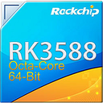

RkTopNG
FriendlyElec CM3588
· Rockchip RK3588
live
- 1s
uptime
6d 22h 50m
kernel
6.1.141
os
Ubuntu 24.04.4 LTS
44
°C
SOC
3
%
CPU
28
%
RAM
fan
0
%
0 / 255
CPU
governor:
schedutil
Load
Load breakdown
user
0%
system
0%
iowait
0%
idle
0%
Thermal zones
Accelerators
VPU 0 sess
Load
Memory
Avail:
11.0G
- Total:
16 GB
Swap
0
%
|
0K/0K
DDR Ctrl
0
%
|
528 MHz
CMA
0
%
|
14M/128M
Memory breakdown
used
4.8G
cache
3.4G
free
7.4G
Storage
ZFS:
2/2 online
Disk I/O
(R+W)
6 disks
Throughput
(ΣR, ΣW)
Disk temperature
Network
eth0
1 GbE
▼
0.5
▲
0.6
MB/s
tailscale0
VPN
▼
74
▲
107
KB/s
Processes
412 task
RkTopNG
· mobile version (mockup) · sample CM3588 data